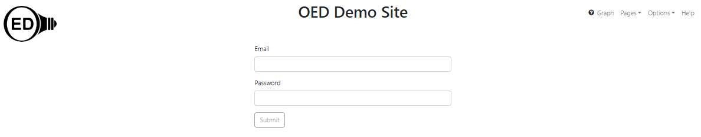

OED Documentation
Overview
Version V1.0.0
These features are only available to select people who oversee the OED site (called admins) so this information is not usually of interest to a general user.
Admin documentation
Information
Site Management
Data Acquisition
Site Installation
User documentation
documentation versions for this page
Current page is V1.0.0.Usage
In order to access any admin features, you must be logged in as an admin.
Once the "Log in" button is clicked, you will be taken to the login page shown in the next figure. Enter your "Email" and "Password" and then click "Submit". If the credentials are correct then the web browser window will take you back to the main OED screen. If there was an issue then a failure popup will briefly appear and you will remain on the login page. If you do not know your admin login credentials then check with the person who set up your OED site. If a site is unable to log in then see the admin installation, create user for additional documentation.
Note this same log in procedure may be used for users with CSV and export logins.
The "Log in" button will become "Log out" after a login and can be used if you want to stop being an admin. OED will automatically log you out after a set period of time.
The pages linked above have information on what you can do as an admin and how to get to each page.
Details
When your session times out as an admin, the next action you take will redirect you to the login page or note you have logged out. After you log in you are returned to the main OED page. Then you can click to get back to where you were.
OED will warn you if you have unsaved changes from some admin pages. You can choose to "Cancel" which stays on that page but does not save the changes, "Leave" that will leave the page without saving your changes, or "Save all" that will save your changes to the database and leave the page. Any unsaved changes will not be permanent and will not be seen by users of your site. Note that OED can only detect that changes were made and not if you set them back to the original values so you will be warned in this case. Also note that other users will not see changes until they reload OED in the web browser.
If admin edits are done around the same time by two different admins (or in different browsers/windows by a single admin) then it is possible the outcome will be unexpected. Admin changes should only be done by one person in one place at a time to avoid any issues.